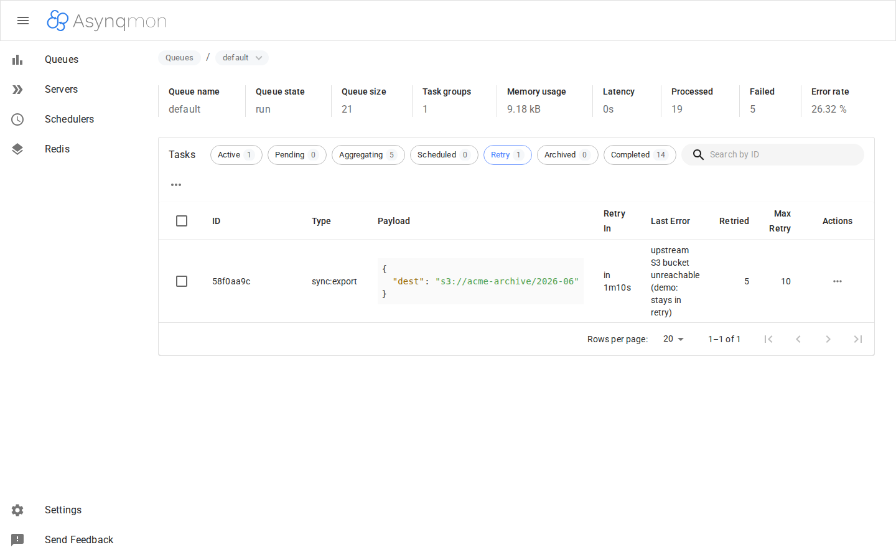
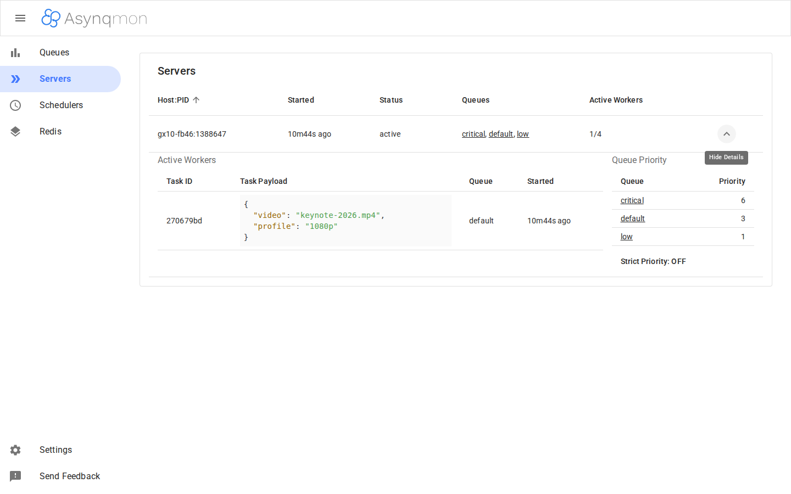

價值主張
對內(工程/維運管理者)
- 安全債清零且可持續:yarn audit 0、govulncheck 0,並由 pre-push hook + CI + 依賴治理(resolutions、team fork tags)守住。
- EOL 風險出清:React 18.3 / MUI 5.18 / router 6.30 / TS 5.9 / Vite 8 全在現役支援線——不再有「升級也救不了」的依賴。
- 可追溯治理:4 份 SDD specs(requirements→design/FMEA→tasks→review)、RTM、ISSUE_LOG、TESTS 兩層、FORK divergence 表。
對外(使用 fork 的團隊/下游)
- 嵌入即用:
asynqmon.New(Options)回傳 http.Handler,UI bundle 已 go:embed——無 node、無容器依賴。 - 與 asynq fork 同源:依賴
austinyuch/asynq v0.26.0-team.1,sentinel URI 等上游修正已內含。 - 誠實的 readiness 邊界:每個宣稱都對應 review.md 裁決與可重現證據(見下方 evidence chips)。
Press Release(Amazon backwards)
2026 年 6 月 7 日 —— 在接手 upstream 三年未更新的 UI 鏈(415 個 npm 漏洞、58 critical、CRA 已停止維護)之後,團隊今天宣布完成全面現代化:安全漏洞歸零、建置快 40 倍、全 stack 落在現役支援線,並以 12/12 的真實瀏覽器整合驗證與 16 張 live 截圖手冊交付。
「我們不想再猜 dashboard 是哪個 commit 建的、也不想再向資安部門解釋 58 個 critical 為什麼動不了,」工程負責人表示。「現在每一顆 image 有 OCI 來歷標籤、每一次 push 有 govulncheck 攔檢、每一個功能宣稱後面都有一份 review.md。」
下游團隊即日起以
go get github.com/austinyuch/asynqmon 取得;standalone binary 與 container 模式同步可用。
FAQ
內部管理者:維護成本與資安合規?
維護面收斂為三條自動防線:pre-push govulncheck(Go)、CI build gate(PR→dev/main)、yarn audit 基線 0。upstream 同步有 repo-local skill pipeline(鏡像分支 + 衝突 hotspot 表 + rename 兜底 script),單人可執行。資安:415→0 的逐項證據在 .agents/specs/001~002 reports,可審計。
內部管理者:這次投入換到什麼?
(1)資安審查阻塞解除——critical 歸零且有持續 gate;(2)前端開發回路快 40 倍(0.33s build)、依賴可再升級;(3)治理資產(specs/RTM/手冊)讓後續變更與 onboarding 成本下降。
外部/下游:與直接用 upstream 差在哪?
upstream UI 鏈停在 2022(CRA4/React16/MUI4,415 漏洞);本 fork 全數現代化並保持 API/URL 結構等價(12/12 smoke 驗證 deep-link 與操作流)。另含 sentinel URI 修正、arm64 容器修正、與 asynq team fork 的版本協同。
外部/下游:整合方式?
三式:Go library 嵌入(主推,go:embed 零外部依賴)、standalone binary、container(localhost/local/asynqmon 本地發布規則或自建)。見使用手冊 Getting Started。
使用者:導入後改善什麼痛點?
佇列救火可視化:8 種任務狀態逐 tab 檢視、失敗原因(Last Error)直接可讀、retry/archive/run 單筆與批次操作、live worker 與 cron entries 一目了然——本 review 與手冊的截圖即為真實 seeded 情境(非 mock)。
核心功能(live evidence)
Evidence 標準:Evidence: live_screenshotCoverage: full-integrationReadiness: PASSSource: .agents/specs/003,004/review.md(個別不同時於卡片註明)




UX Flow
8 狀態 tabs"] B -->|"點任務"| C["Task 詳情"] B -->|"row/批次"| D["run / archive / delete"] A --> E["Servers"] A --> F["Schedulers"] A --> G["Redis Info"]
Gap Analysis
✅ 已解(摘自 ISSUE_LOG resolved + specs)
- 415 npm 漏洞 / 58 critical → 0(SPEC-001/002)
- EOL stack(CRA/React16/MUI4/router5/TS4.9)→ 全現役線(SPEC-002/003/004)
- 幽靈依賴 pretty-bytes、types/runtime 錯位(IL-R01/R02)
- CodeQL v1 停服、docker-publish PR 必敗(IL-R03)
- arm64 容器寫死 amd64(IL-R04);本地 image 發布無規則(IL-R05)
- Servers/Schedulers/aggregating 全狀態 live 證據(IL-R06)
- E2E CI gate + eslint 鏈 + Metrics 真實圖表驗證(IL-R07~R09,SPEC-005)
⏳ 待解(ISSUE_LOG open)
| 項目 | 嚴重度 |
|---|---|
| IL-003 DockerHub secrets(external-blocked,需 repo owner) | Low |
Roadmap
- 近期:已完成(SPEC-005:E2E CI gate、eslint、Metrics 驗證)。
- 常態:upstream sync(skill pipeline,目前 0 behind);asynq fork 版本協同(`-team.N` tags)。
- 視需求:fork release tag(`v0.7.x-team.1`)、DockerHub 發佈(IL-003 解除後)。